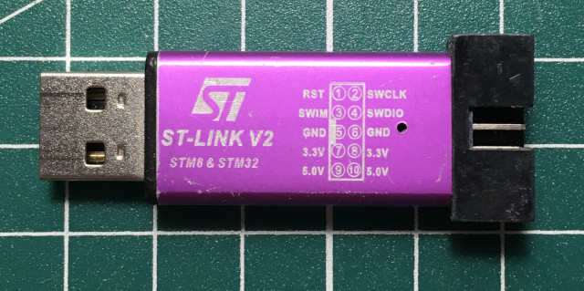
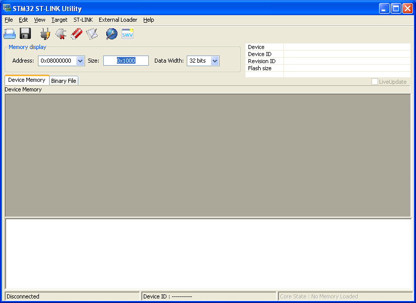

司徒目前使用的編譯器是GNU GCC，燒錄軟體則是OpenOCD，安裝方式如下：
$ sudo apt-get install gcc-arm-none-eabi -y $ cd $ git clone https://github.com/ntfreak/openocd $ cd opebocd $ git submodule update --init --recursive $ ./bootstrap $ ./configure $ make $ sudo make install
燒錄器則是使用ST-LINK V2

